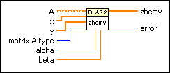
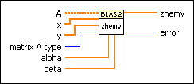

zhemv - Hermitian Matrix-Vector Product (CDB) VI
Owning Palette: Basic Linear Algebra Subroutines VIs
Requires: Full Development System
Calculates the product of a Hermitian matrix and a vector.

 Add to the block diagram Add to the block diagram |
 Find on the palette Find on the palette |
Owning Palette: Basic Linear Algebra Subroutines VIs
Requires: Full Development System
Calculates the product of a Hermitian matrix and a vector.

| Add to the block diagram |
Find on the palette |
 |
A is a Hermitian matrix. The VI multiplies the first N rows and the first N columns of the upper or lower triangular component of A by X, where N is the number of elements in X. The number of rows and columns in A must be greater than or equal to N. | ||||
 |
x is an N–element complex vector. | ||||
|
y is a complex vector of at least as many elements as x. The default is a vector with N elements, all equal to 0. | ||||
 |
matrix A type specifies whether the VI uses the upper or lower triangular part of A for the calculation.
|
||||
 |
alpha is a complex scalar that scales A*x. The default is 1. | ||||
|
beta is a complex scale that scales y. The default is 1. | ||||
 |
zhemv is a complex vector with the same number of elements as y that returns the result of alpha*A*x + beta*y. | ||||
 |
error returns any error or warning from the VI. You can wire error to the Error Cluster From Error Code VI to convert the error code or warning into an error cluster. |
Refer to the BLAS (Basic Linear Algebra Subprograms) website at netlib.org for more information on BLAS functions.